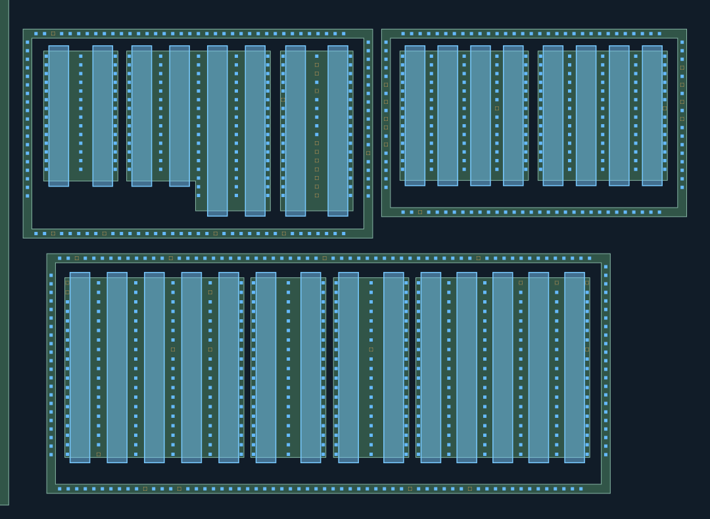
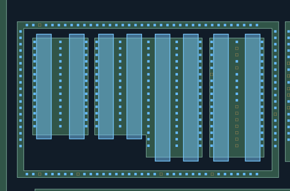
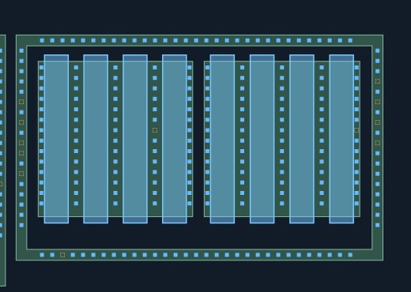
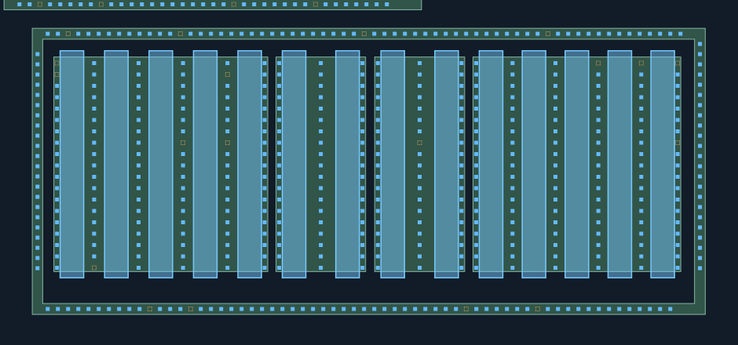
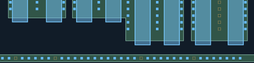
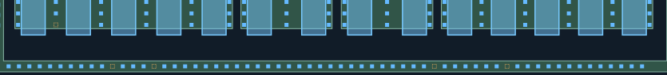

CT材料联合重建复核
补充裁决：本页48处橙框现已获人工确认；本页图稿保留原样。打开更新后的CT图与栅端诊断。
A／B／C本轮源漏及环CT已获批准，几何保持不变。 靠近POLY的AA边缘孔仍归AA，不以距离判成栅CT；橙色槽位与未辨清的栅端CT继续未知。人审记录 · 范围锁定
蓝色：新增AA接触；紫色：新增POLY接触；灰蓝：已审CT，保持不变、不重复验收。
新孔均有照片观察支持，采用局部材料对应，未使用全幅盲投影。AA/POLY材料未修改。
橙色虚框仅为待查槽位，不计为CT，也不代表实际缺孔。
仅重建下列局部观察支持的孔列；未补齐缺少证据的位置，未画不代表没有孔。
新区域的材料对应仍为AI候选，孔数不是人工确认值。几何检查不是真实工艺DRC，M1归属未知。
整体质量门与防退化检查 ·
匹配与未选择观察记录 · 范围与未知 · A/B/C/G核对清单
Q2中部MOS：A／B／C源漏与环CT，栅端暂列未知
电阻左侧两组MOS按原图分成上左A、上右B、下方C三个子阵列。先核对源漏CT及各自外围环。栅端亮边不能直接当成CT，暂列未知，不据此推断无引出或独立栅。灰蓝为此前791个保留CT，原130个完全已审，其余661的连接关系基本通过但几何细节未定稿。
逐孔列数量与待查槽位（0起编号）
- Q2-A1-SD-1: 14 孔；待查槽位 []
- Q2-A1-SD-2: 14 孔；待查槽位 []
- Q2-A1-SD-3: 14 孔；待查槽位 []
- Q2-A2-SD-1: 14 孔；待查槽位 []
- Q2-A2-SD-2: 14 孔；待查槽位 []
- Q2-A2-SD-3: 17 孔；待查槽位 []
- Q2-A2-SD-4: 17 孔；待查槽位 []
- Q2-A2-SD-5: 17 孔；待查槽位 []
- Q2-A3-SD-1: 16 孔；待查槽位 [5]
- Q2-A3-SD-2: 7 孔；待查槽位 [1, 2, 4, 10, 11, 12, 13, 14, 15, 16]
- Q2-A3-SD-3: 17 孔；待查槽位 []
- Q2-B1-SD-1: 14 孔；待查槽位 []
- Q2-B1-SD-2: 14 孔；待查槽位 []
- Q2-B1-SD-3: 14 孔；待查槽位 []
- Q2-B1-SD-4: 13 孔；待查槽位 [6]
- Q2-B1-SD-5: 14 孔；待查槽位 []
- Q2-B2-SD-1: 14 孔；待查槽位 []
- Q2-B2-SD-2: 14 孔；待查槽位 []
- Q2-B2-SD-3: 14 孔；待查槽位 []
- Q2-B2-SD-4: 14 孔；待查槽位 []
- Q2-B2-SD-5: 13 孔；待查槽位 [6]
- Q2-C0-SD-1: 17 孔；待查槽位 [0, 1]
- Q2-C0-SD-2: 18 孔；待查槽位 [18]
- Q2-C0-SD-3: 19 孔；待查槽位 []
- Q2-C0-SD-4: 18 孔；待查槽位 [7]
- Q2-C0-SD-5: 17 孔；待查槽位 [1, 7]
- Q2-C0-SD-6: 19 孔；待查槽位 []
- Q2-C1-SD-1: 19 孔；待查槽位 []
- Q2-C1-SD-2: 19 孔；待查槽位 []
- Q2-C1-SD-3: 19 孔；待查槽位 []
- Q2-C2-SD-1: 19 孔；待查槽位 []
- Q2-C2-SD-2: 18 孔；待查槽位 [7]
- Q2-C2-SD-3: 19 孔；待查槽位 []
- Q2-C3-SD-1: 19 孔；待查槽位 []
- Q2-C3-SD-2: 19 孔；待查槽位 []
- Q2-C3-SD-3: 19 孔；待查槽位 []
- Q2-C3-SD-4: 18 孔；待查槽位 [0]
- Q2-C3-SD-5: 18 孔；待查槽位 [0]
- Q2-C3-SD-6: 17 孔；待查槽位 [0, 7]
- Q2-A-RING-TOP: 36 孔；待查槽位 [2]
- Q2-A-RING-BOTTOM: 33 孔；待查槽位 [2, 8, 21, 29]
- Q2-A-RING-LEFT: 19 孔；待查槽位 []
- Q2-A-RING-RIGHT: 18 孔；待查槽位 [13]
- Q2-B-RING-TOP: 31 孔；待查槽位 []
- Q2-B-RING-BOTTOM: 30 孔；待查槽位 [3]
- Q2-B-RING-LEFT: 13 孔；待查槽位 [5, 7, 9, 10, 12]
- Q2-B-RING-RIGHT: 14 孔；待查槽位 [3, 5, 7, 9]
- Q2-C-RING-TOP: 59 孔；待查槽位 [2, 13, 31, 49]
- Q2-C-RING-BOTTOM: 58 孔；待查槽位 [10, 14, 41, 48]
- Q2-C-RING-LEFT: 22 孔；待查槽位 []
- Q2-C-RING-RIGHT: 23 孔；待查槽位 []
O 位置总览
蓝色为新AA接触候选；黄色POLY与AA保持既有结果。GA/GC仅供辨别端部边缘和真实孔，不自动声明栅CT。
双击图像可在新页放大查看。

A 上左A：阶梯AA及外围环
蓝色为新AA接触候选；黄色POLY与AA保持既有结果。GA/GC仅供辨别端部边缘和真实孔，不自动声明栅CT。
双击图像可在新页放大查看。

B 上右B：两组四指及外围环
蓝色为新AA接触候选；黄色POLY与AA保持既有结果。GA/GC仅供辨别端部边缘和真实孔，不自动声明栅CT。
双击图像可在新页放大查看。

C 下方C：多组栅指及外围环
蓝色为新AA接触候选；黄色POLY与AA保持既有结果。GA/GC仅供辨别端部边缘和真实孔，不自动声明栅CT。
双击图像可在新页放大查看。

GA 上左A栅端原图细看
蓝色为新AA接触候选；黄色POLY与AA保持既有结果。GA/GC仅供辨别端部边缘和真实孔，不自动声明栅CT。
双击图像可在新页放大查看。

GC 下方C栅端原图细看
蓝色为新AA接触候选；黄色POLY与AA保持既有结果。GA/GC仅供辨别端部边缘和真实孔，不自动声明栅CT。
双击图像可在新页放大查看。
